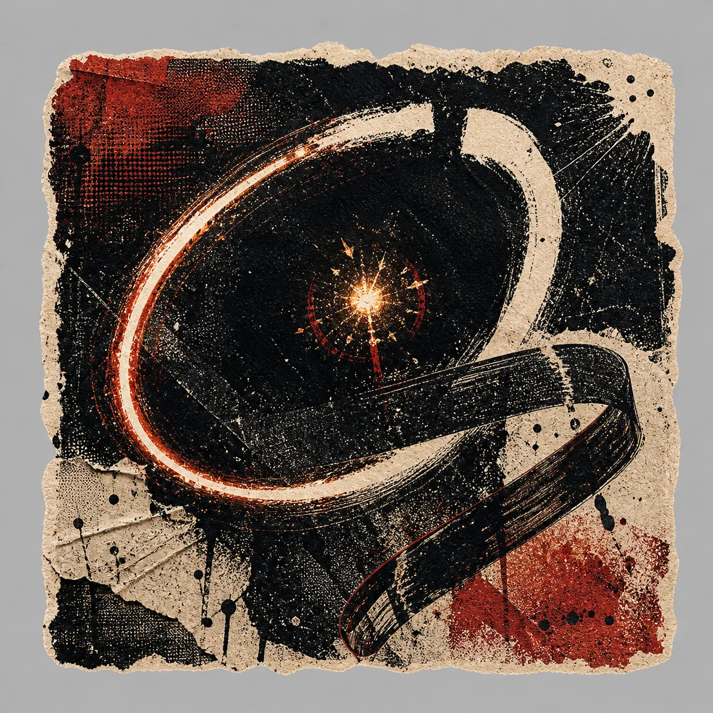
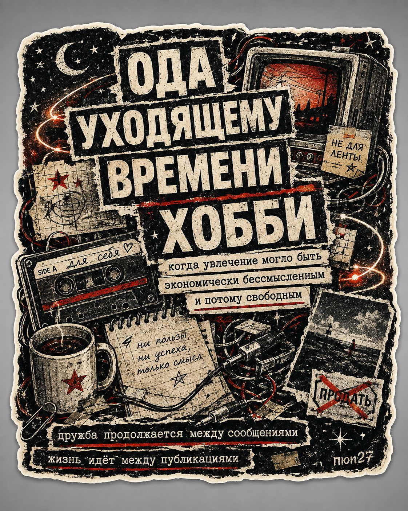
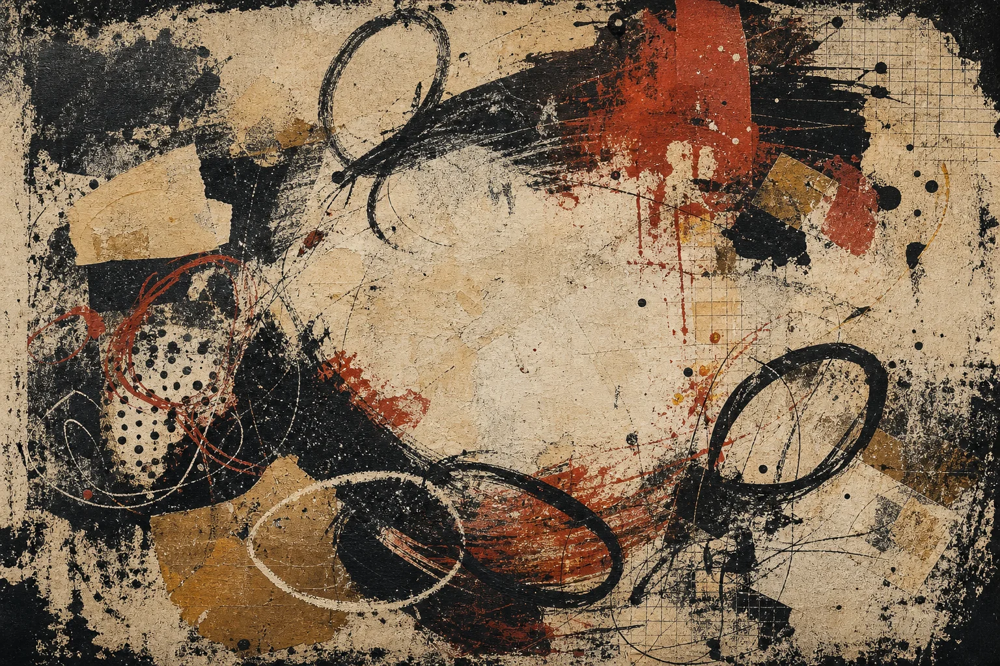
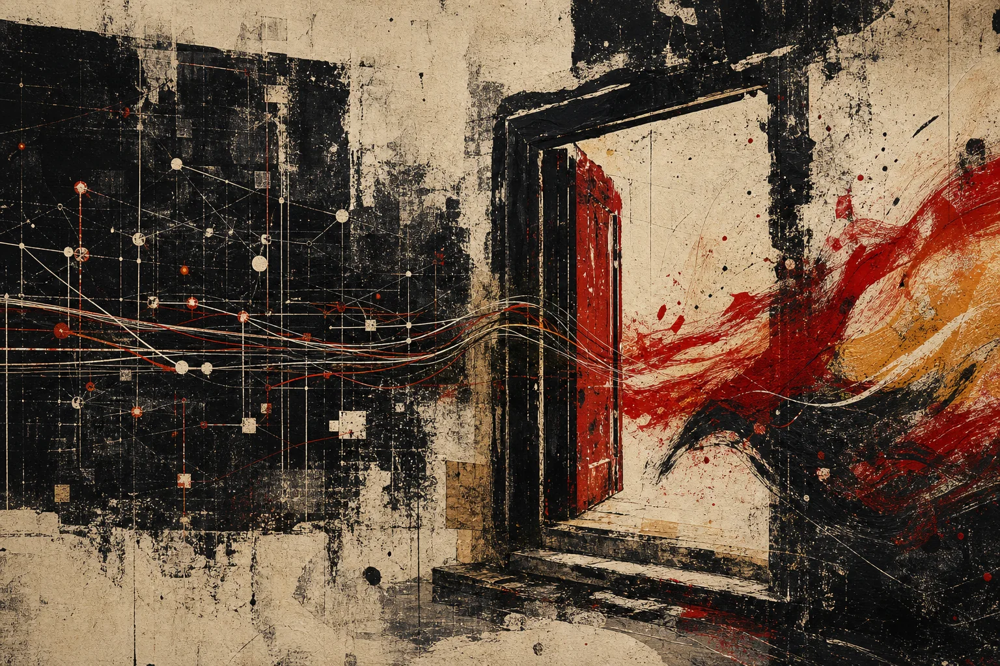
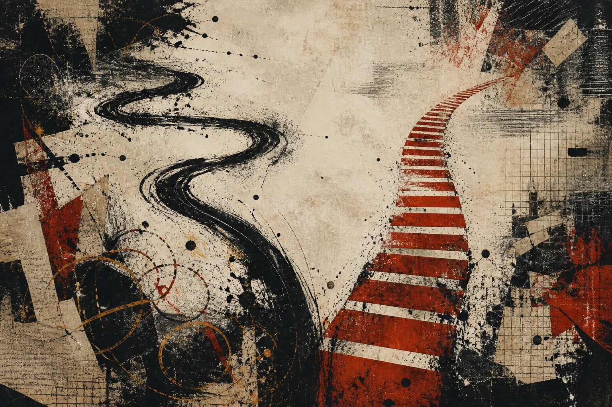
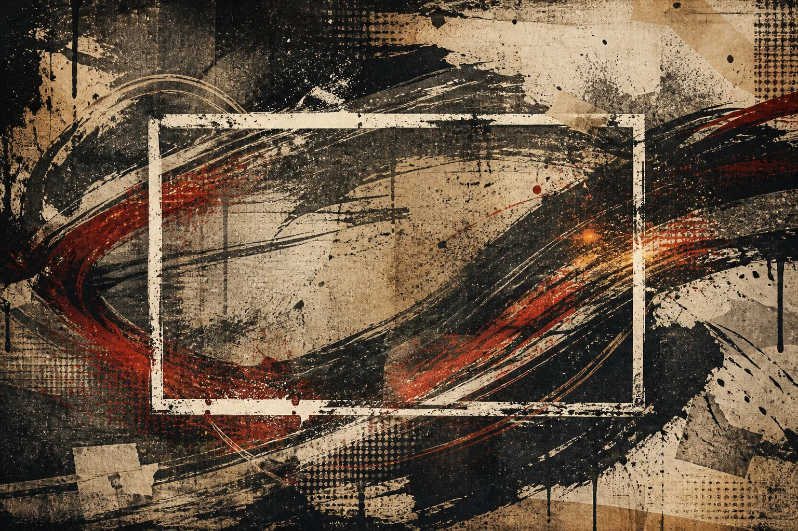
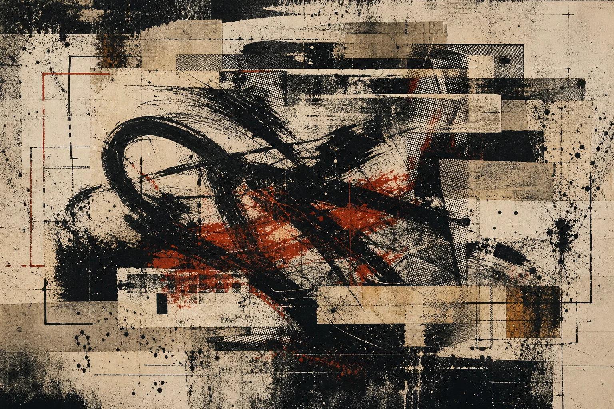
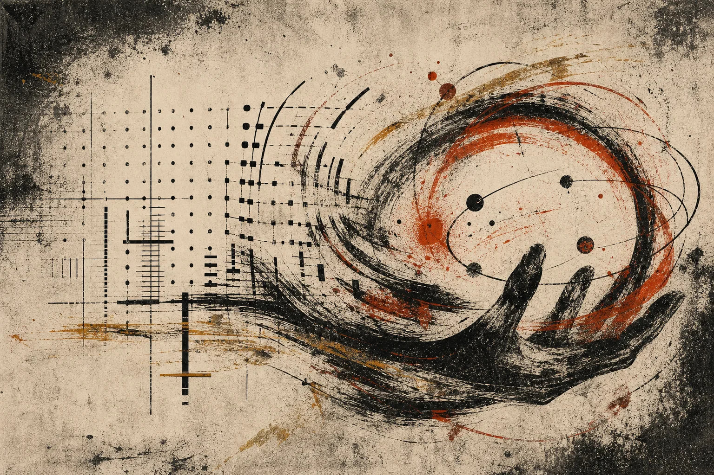

hobbies ruined · tape 01
Кризис хобби
Как дружеская любительская практика стала требовать медиальных доказательств, роста и экономического будущего.

00:00
Последние несколько лет я ощущал странный кризис, связанный с моими увлечениями, некоторые из которых живут со мной больше двадцати лет. Сами интересы сохранялись: предметы по-прежнему ложились в руки, музыка просила вечеров, технические эксперименты открывались ночью, а давление исходило от социальной формы, через которую хобби теперь принято предъявлять миру.
Сначала я объяснял этот кризис выгоранием, возрастом, сменой приоритетов, усталостью от одних и тех же сцен или личным сбоем мотивации. Вопрос о том, почему истончилась прежняя радость в сообществах, куда я когда-то входил свободно, неизменно возвращал меня к самодиагнозу.
Точнее мой опыт описывал другой вопрос: почему социальная форма занятий, которые я по-прежнему люблю, начала вызывать сопротивление? Клубы, чаты, конвенции и неформальные группы по-прежнему собирали людей вокруг жонглирования и музыки, но признание внутри них всё сильнее зависело от постоянного подтверждения, что ты продолжаешь этим заниматься.
Мы были здесь

Я помню время, когда мы встречались, потому что дружили, потому что было смешно, потому что между нами возникало что-то общее, понятное лишь нескольким людям и способное прожить вечер без дальнейшего продолжения. Кто-то приносил и делился, кто-то показывал движение, кто-то помогал с площадкой, кто-то оставался рядом; деньги иногда появлялись сами, и мы могли их взять, но они не объясняли встречу. Репутация существовала в воздухе, хотя никто не обязан был превращать каждый вечер в следующий взнос на её счёт.
Среди наших фраз была одна, которую я до сих пор слышу с прежней интонацией: «Нас опять не поймут, иначе это будет шаг назад», и непонятность оставалась допустимой ценой за собственную форму. Можно было сделать вещь для пятерых, оставить её без описания и всё равно считать вечер полным; отношения уже были, а фотография, запись или текст иногда появлялись из них.
Сегодня такой уклад легко принять за бедную версию профессиональной сцены, которой не хватало продюсера, кассы, медийного плана и навыка продавать себя. Для нас эта практика принадлежала добровольной жизни, где дружба, взаимность, любопытство и долгая память друг о друге поддерживали её ценность.
Эта форма и описана в статье «Жонглирование»: внимание, время, выбор момента и отношение к предмету предшествуют внешнему результату, позволяя человеку заниматься интенсивно, ездить на конвенции, разговаривать о технике, исчезнуть на полгода и вернуться к людям, помнившим его место в общей истории, и к предметам, которые помнили руки.
Интернет, который заканчивался у двери

Интернет уже был частью этой жизни, но выполнял более ограниченную работу: помогал находить друг друга на форумах и в списках рассылки, смотреть сайты конвенций, скачивать видеоматериалы, узнавать расписание и договариваться о ночлеге. Большая часть инфраструктуры заканчивала работу после выключения компьютера и выхода на улицу. Форум помогал договориться и синхронизировать намерения, после чего встреча могла несколько часов обходиться без его дальнейшего обслуживания; фотография возвращалась в сеть по желанию присутствовавших, а пропущенная публикация не делала вечер неполным.
В эти часы без сети оставался и поиск материала. Слушать в никуда, принести странную находку, промахнуться на глазах у своих, сменить вкус — для вечера в кругу это и есть занятие, хотя со стороны часто выглядит пустой тратой. Когда модель уже выдала варианты, а календарь заданий подсказал, чем заняться, этот промежуток сужается; его ещё может сберечь само сообщество.
В моём опыте перемена стала заметной приблизительно в 2016 году, хотя смартфоны, платформы и метрики существовали раньше, разные сообщества менялись в разное время, а некоторые до сих пор сохраняют прежний ритм. Примерно тогда я начал замечать, что средство координации превращается в среду, внутри которой встреча должна оставить правильно оформленное продолжение.
Иван Иллич описывал «конвивиальные инструменты» как средства, которые расширяют способность человека действовать, не подчиняя действие собственной институциональной логике. Старый форум был далёк от идеала, но в удачный момент выполнял именно такую ограниченную работу: он помогал людям собраться и уступал им место. Платформа нового типа остаётся рядом во время занятия, предлагает форму его регистрации, ранжирует результат, распределяет внимание и зовёт обратно, поэтому вопрос о хобби теперь включает вопрос о том, умеет ли посредник завершать свою работу.
Два пути

Рядом с нами люди создавали мероприятия и магазины, продавали выступления, строили школы, искали спонсоров и превращали то же занятие в профессию, причём поначалу эти пути почти не мешали друг другу. Один человек хотел дохода от жонглирования, другой приходил с предметами ради нескольких часов в зале; один устраивал событие с билетами, другой помогал бесплатно, третий получал случайный гонорар и на следующей неделе снова занимался ради самого занятия.
Для меня та же развилка прошла и через увлечение компьютерами и программированием. В начале 2000-х я читал книги и пробовал Pascal, Borland Delphi, C, C++, ассемблер и Perl, ставил разные Linux-системы, переустанавливал операционные системы и собирал компьютеры, потому что это было интересно. Работа появилась позже, когда за уже знакомую деятельность стали платить достаточно, чтобы покрывать повседневные расходы; исходная практика сохраняла собственную жизнь, и вечер с неработающим загрузчиком был полным событием ещё до появления заказчика. Это увлечение остаётся хобби по сей день — и из него появляются эти тексты.
Теперь устройства и системы часто просто работают, что остаётся настоящим техническим достижением и освобождает человека от большого количества прежнего обслуживания. Кризис возникает из социальной формы участия, которая сопровождает надёжный инструмент и навязывает каждому интересу измеримую траекторию, публичное доказательство и экономическое будущее.
Перемена началась в языке, когда личное решение стали подавать как правильное завершение всякой практики: к фразе «творчество должно быть оплачиваемым» присоединилось требование, чтобы работу увидело больше людей. Обе формулы возникали из понятных желаний, ведь художника действительно могут эксплуатировать бесплатной работой, человеку бывает нужен доход, а хорошая работа иногда заслуживает встречи с широкой аудиторией; слово «должно» постепенно передвигало границу и меняло категорию происходящего.
Монетизация прошла путь от одной из возможностей к признаку успеха, после чего её отсутствие начало требовать объяснения. Публичность тоже превратилась из редкой возможности показать результат в доказательство самого участия. Бесплатное действие теперь воспринималось в рыночной логике, которая спрашивала, почему человек не берёт деньги, не ценит свой труд, не растит аудиторию и не использует шанс; даже отказ получал коммерческое толкование.
Действие, совершённое просто так, потеряло культурную нейтральность, поскольку дружба, прикол и взаимность всё чаще считались недостаточными основаниями тратить время и пользоваться своими умениями; над любым занятием повисал скрытый вопрос о результате, аудитории и доказанной ценности.
Люди, которые хотели защитить достоинство творческого труда, могли невольно начать считать трудом то, что раньше жило за его пределами. Они поддерживали сцену справедливой оплатой, лучше организованными фестивалями, расширением аудитории, удобными площадками и регулярными публикациями. Из повторения этих разумных шагов выросла новая моральная карта, где неоплачиваемое казалось недооценённым, невидимое становилось сомнительным, а любитель выглядел профессионалом, который ещё не завершил превращение.
В исследовании сообщества авторов и зрителей YouTube-материалов о косметике Мардон, Кокер и Даунт описали сходное движение. Появление коммерческих ролей меняло отношения и уменьшало пользу участия для тех, кто ничего не продавал (Мардон, Кокер и Даунт, 2023). Жонглирование и музыка лежат за пределами этого материала, поэтому в моей истории он служит ограниченной аналогией: предпринимательская логика проникает в ожидания, обращённые к людям, которые ничего не продают.
Внутренняя мотивация сохраняется и внутри коммерциализированной среды. Опрос 377 создателей видео для YouTube и Twitch показал, что удовольствие и социальное взаимодействие продолжали поддерживать производство материала наряду с доходом и признанием (Тёрхёнен и др., 2019). Кризис порождает устройство признания, в котором внешняя траектория получает власть оценивать участие, хотя внутренний интерес способен её пережить.
Профессиональный путь при этом начинается с работы в расчёте на будущее задолго до первого заработка: человек собирает публичное портфолио, осваивает продвижение, поддерживает связи и принимает неоплачиваемую работу в ожидании будущей возможности. Для того, кто действительно хочет сделать хобби профессией, такая инвестиция может быть осмысленной; кризис возникает, когда такой режим становится общей нормой и каждый участник должен жить так, будто будущая карьера уже оценивает его сегодняшний вечер. Та же речь о возможностях, показе работы и карьере становится принудительной, когда её подают как универсальную психологию практики: прогресс остаётся одной из возможных радостей, а давление начинается, когда прогресс должен оправдывать само продолжение.
В разговоре с детьми и подростками устойчивый интерес быстро вызывает вопрос о профессии, канале или способе заработка. Исследования описывают социальные медиа как двойственную среду: самопредставление и аудитория могут поддерживать исследование идентичности, дружбу и чувство принятия, а публичная и сохраняющаяся обратная связь участвует в формировании представления о себе (Перес-Торрес, 2024). Прямых данных о том, как ранняя аудитория влияет на последующий отказ от конкретного хобби, пока недостаточно. Здесь я делаю более узкий вывод из собственного опыта: подписчики, вложенные деньги взрослых и узнаваемая роль способны превратить пробу в обещание и повысить социальную цену прекращения. Право годами повторять одно движение без обязательного роста и право завершать и возобновлять практику относятся к «Непрерывности».
Где твои новые видео

Фраза «А где твои последние видео с жонглированием?» может прозвучать как тёплый интерес к человеку, которого давно не видел, хотя в некоторых ситуациях она уже проверяет наличие нового цифрового следа и принимает отсутствие видеозаписи за косвенное свидетельство отсутствия практики.
Ещё резче это ощущается в просьбе «скинь видео, как жонглируешь», когда видеозапись предшествует встрече и должна подтвердить, что навык сохранился, а человек соответствует принятой форме присутствия. Запись превращается в удостоверение: сначала покажи медиальный объект, затем тебя распознают как человека из этой практики.
Техническое различие между событием и записью, влияние камеры на движение и превращение публикации в условие легитимности уже разобраны в «Executable Traces». Следующий социальный шаг превращает запись в пропуск, а инфраструктуру представления — в регулятора принадлежности.
Раньше путь шёл от отношений к совместному занятию, после которого иногда оставался медиальный след. Новая среда всё чаще начинает со следа и требует, чтобы тот обеспечил видимость, собрал аудиторию, создал отношения и поддерживал их регулярными публикациями, хотя раньше мы делились внутри уже существовавшей связи.
Вторая работа

Над хобби появляется ещё одна работа, поскольку человек продолжает жонглировать и одновременно становится оператором медиального представления собственного жонглирования: выбирает ракурс, снимает попытки, отбирает удачную, монтирует, подписывает, публикует, отвечает, проверяет реакцию и через некоторое время снова напоминает о себе; те же задачи возникают вокруг музыки, рисунка, велосипеда, домашней конструкции или программы, написанной для себя.
Эта работа влияет на исходную практику ещё до съёмки: движение должно войти в кадр, комбинация должна завершиться достаточно быстро, ошибка отправляется в мусор, а удачная попытка начинает представлять весь вечер. На следующий вечер человек уже помнит о метрике и бесконечной ленте, где всегда есть кто-то моложе, быстрее, лучше освещённый, увереннее перед камерой и связанный со спонсором; небольшая сцена с разными характерами превращается в единую шкалу, хотя общего измерителя у этих практик никогда не было.
Метрика возвращается в руки

Теория самодетерминации Райана и Деси описывает устойчивую внутреннюю мотивацию через автономию, компетентность и связанность с другими людьми, и все три условия меняются, когда хобби получает постоянный медиальный контур. Автономия сужается незаметно: человек по-прежнему сам выбирает занятие, но начинает выбирать внутри набора форматов, длительностей и ритмов, которые легче распространяются. Компетентность отделяется от телесного знания и локального роста, поскольку число просмотров предлагает доступную внешнюю меру, способную заглушить удовлетворение от сложного движения, наконец освоенного после нескольких месяцев. Связанность переносится из памяти конкретных отношений в поток реакций, где высокая активность может сосуществовать с одиночеством, а молчание знакомого человека становится неотличимым от отсутствия аудитории.
Внешняя награда не уничтожает внутренний интерес автоматически, и деньги, аплодисменты или широкая аудитория способны поддерживать практику. Эксперименты Леппера и соавторов с замещением внутреннего интереса внешней наградой важны здесь как предупреждение о смене объяснения: если действие, которое уже приносило удовольствие, систематически организуют вокруг ожидаемой награды, человек может начать считать, что участвует ради неё. Платформенная метрика делает ожидание непрерывным, поскольку она доступна после каждой публикации и влияет на следующий выбор темы, сложности и момента остановки.
Получается петля, в которой занятие порождает представление, платформа измеряет его, измерение меняет следующий сеанс, а изменённый сеанс производит материал, лучше приспособленный к той же системе оценки. Эта обратная связь действует даже без прямой погони за известностью: достаточно несколько раз увидеть, какой фрагмент понятнее аудитории, какое движение удерживает внимание и какая пауза выглядит как исчезновение, чтобы знание о реакции поселилось в руках.
Локальное сравнение тоже бывало жёстким, завистливым и иерархичным, однако оно происходило среди конечного числа людей, чьи тела, возраст, обстоятельства и годы практики были хотя бы частично известны. Алгоритмическая лента отбирает лучшие результаты из множества сцен и показывает их рядом как сопоставимые образцы одного занятия, убирая большую часть контекста и сохраняя точный показатель реакции. Классическая теория социального сравнения Фестингера объясняет стремление оценивать себя через других, а новая инфраструктура меняет круг людей, с которыми человек себя сравнивает: круг знакомых уступает место бесконечной витрине исключительных результатов, с которой он сопоставляет обычный вечер каждый раз, когда открывает канал.
Поэтому медиальная работа представляет собой налог на участие, выплачиваемый временем, вниманием и изменением самой практики. Его можно принять ради профессиональной сцены, общего архива или удовольствия от создания видео, но добровольность требует возможности заниматься без этой второй специальности и сохранять признание среди людей, которые знают тебя по совместным встречам.
Несколько лет я принимал усталость от второй работы за потерю интереса к первой, пока не понял, что можно любить занятие и сопротивляться социальной форме, которая выросла вокруг него. Предметы всё ещё оживали в руках, хотя ожидание нового видеоматериала вызывало тяжесть; музыка просила вечера, хотя мысль о выпуске, продвижении и поддержании профиля закрывала дверь; это давление долго маскировалось под исчезновение желания.
Фраза «хобби позволялось оставаться экономически бессмысленным» описывает свободу, которая предшествует выступлению, продаже, известности и профессии: занятие остаётся полным при нулевой рыночной цене, без медиального следа и без обязательного следующего шага. Человеческий смысл уже живёт в самом событии, когда мы встречаемся, долго возимся, придумываем странный трюк, терпим неудачу и смеёмся над прожитым вечером.
Я продолжаю существовать между публикациями, а практика продолжается между результатами и живёт между видео: в весе предмета, в движении, которое вернулось после паузы, в разговоре без камеры и в руке, поднявшей упавший мяч, пока лента оставляет эти наполненные жизнью промежутки пустыми.
Следующая статья серии, «Антидигитизм», переносит разговор от одной сцены к устройству отказа: что происходит, когда факультативный посредник становится условием участия, и как равноценные маршруты могут сохранять цифровые инструменты, освобождая людей от обязательного непрерывного присутствия.
Источники
- Leon Festinger. “A Theory of Social Comparison Processes.” Human Relations 7(2), 1954. https://doi.org/10.1177/001872675400700202
- Ivan Illich. Tools for Conviviality. Harper & Row, 1973.
- Mark R. Lepper, David Greene, Richard E. Nisbett. “Undermining Children’s Intrinsic Interest with Extrinsic Reward.” Journal of Personality and Social Psychology 28(1), 1973. https://doi.org/10.1037/h0035519
- Rebecca Mardon, Hayley Cocker, Kate Daunt. “How Social Media Influencers Impact Consumer Collectives: An Embeddedness Perspective.” Journal of Consumer Research 50(3), 2023. https://doi.org/10.1093/jcr/ucad003
- Richard M. Ryan, Edward L. Deci. “Self-Determination Theory and the Facilitation of Intrinsic Motivation, Social Development, and Well-Being.” American Psychologist 55(1), 2000. https://doi.org/10.1037/0003-066X.55.1.68
- Maria Törhönen, Max Sjöblom, Lobna Hassan, Juho Hamari. “Fame and fortune, or just fun? A study on why people create content on video platforms.” Internet Research 30(1), 2019. https://doi.org/10.1108/INTR-06-2018-0270
- Vanesa Pérez-Torres. “Social media: a digital social mirror for identity development during adolescence.” Current Psychology 43, 2024. https://doi.org/10.1007/s12144-024-05980-z